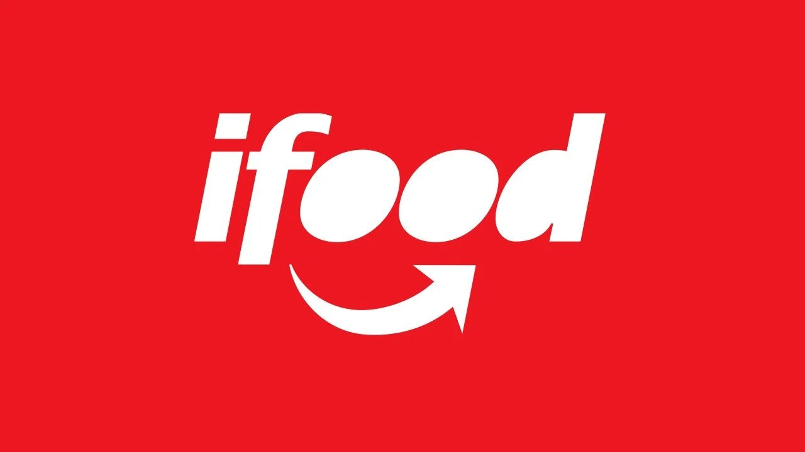

Engenharia de cardápio
Fotos, descrições e preços estratégicos para converter visitas em pedidos e maximizar o ticket médio.
Gestão profissional no iFood, 99Food e Keeta. Estratégia, otimização e resultados reais para donos de restaurante que querem crescer de verdade.

Conheça o Giovani
Sou o Giovani, gestor de delivery com foco em iFood, 99Food e Keeta. Trabalho diretamente dentro das plataformas para fazer o seu restaurante aparecer mais, vender mais e fidelizar clientes.
Já passei pelos bastidores de mais de 80 restaurantes — dos pequenos negócios de bairro às operações de maior volume. Isso me deu uma visão prática e direta do que realmente funciona no delivery.
Meu trabalho não é só configurar plataforma. É entender o seu negócio, montar uma estratégia real e acompanhar de perto os resultados.
O que fazemos
Você foca na cozinha. A gente cuida de tudo dentro das plataformas.
Fotos, descrições e preços estratégicos para converter visitas em pedidos e maximizar o ticket médio.
Gerenciamos campanhas e cupons dentro das plataformas com ROI monitorado e ajustes contínuos para maximizar retorno.
Estratégias para aumentar notas e gestão do relacionamento com clientes nas plataformas.
Ticket médio, conversão e taxa de retorno — dados claros e organizados em relatórios periódicos.
Ainda fora das plataformas? Configuração completa e estratégia de estreia para começar vendendo.
Análise da concorrência e plano de ação personalizado para o seu nicho e região.
Como funciona
Analisamos seu perfil nas plataformas e mapeamos perdas de receita e oportunidades imediatas.
Estratégia sob medida considerando seu segmento, região e o que a concorrência já faz.
Executamos cardápio, campanhas, promoções e reputação. Você acompanha em tempo real.
Monitoramento constante, testes e ajustes periódicos para resultados consistentes.
Resultados reais
"Em 30 dias meu faturamento no iFood aumentou mais de 60%. O Giovani sabe exatamente onde mexer."
"Estava quase desistindo do delivery. Depois da gestão do Giovani, hoje é meu principal canal de vendas."
"Profissional, comprometido e com resultado real. Recomendo para qualquer dono de restaurante."
Dúvidas frequentes
Respostas diretas para as dúvidas mais comuns de donos de restaurante.
Um gestor de delivery é o profissional que cuida de toda a operação do seu restaurante dentro das plataformas como iFood, 99Food e Keeta. Isso inclui configurar e otimizar o cardápio, gerenciar campanhas, monitorar avaliações e interpretar os dados para aumentar suas vendas — enquanto você foca em cozinhar.
Os primeiros resultados geralmente aparecem nas primeiras 2 a 4 semanas, com otimizações no cardápio e nas campanhas. Resultados mais expressivos de crescimento sustentável — como o aumento médio de 80% nas vendas — costumam se consolidar ao longo de um trimestre de trabalho consistente.
Sim. A gestão pode ser feita em uma ou mais plataformas simultaneamente, de acordo com o perfil e os objetivos do seu restaurante. Estar presente em múltiplas plataformas aumenta o alcance e reduz a dependência de um único canal de vendas.
Não necessariamente. Se o seu restaurante ainda não está nas plataformas, fazemos o processo completo de cadastro, configuração inicial e lançamento estratégico. Se já está cadastrado, partimos direto para o diagnóstico prévio e otimização do que já existe.
O diagnóstico prévio é uma análise detalhada do seu perfil atual nas plataformas de delivery. Avaliamos cardápio, fotos, preços, avaliações, campanhas ativas e posicionamento frente à concorrência. Com isso, identificamos os principais pontos de perda de receita e as oportunidades imediatas de crescimento.
Criamos e gerenciamos campanhas pagas e cupons dentro das próprias plataformas (iFood Ads, por exemplo), monitorando o retorno sobre o investimento em tempo real. O objetivo é atrair novos clientes e reativar quem já pediu, sem comprometer a margem do seu negócio.
Vamos conversar
Diagnóstico prévio sem compromisso. Descubra o quanto seu restaurante está deixando de ganhar.
💬 Falar no WhatsApp